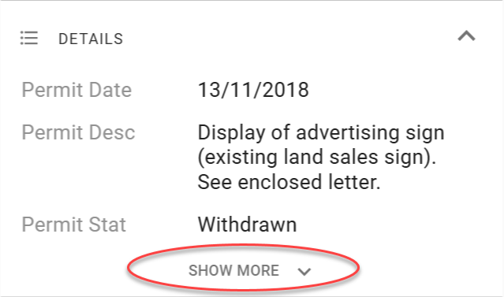
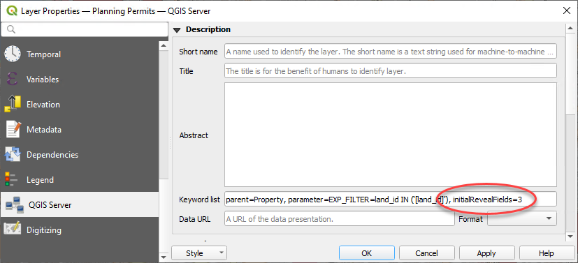
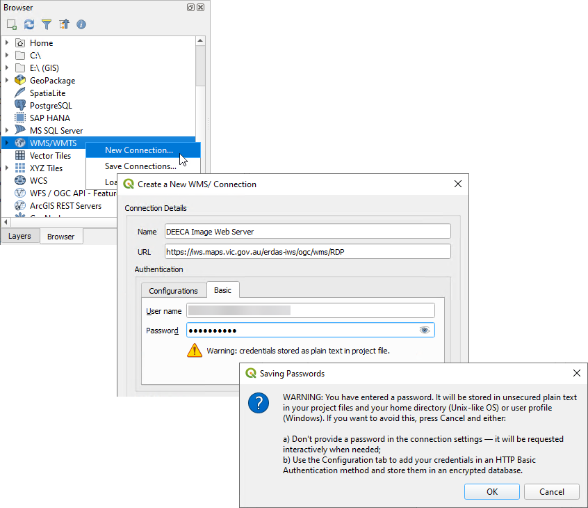
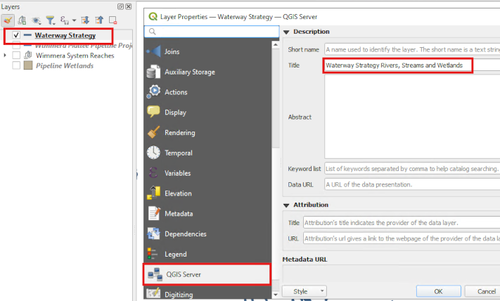

If QGIS displays a question mark next to the layer name, it may indicate that QGIS needs a projection to be specified. Go to Layer Properties > Source > Assigned CRS, and pick a projection. See here for more information.
About layer file paths
When adding new file-based layers, use the layer's absolute file path (UNC) to ensure that the service under which the QGIS Server is running can recognise the path.
Typically your own user account will have certain drives mapped for convenience, so you might be used to working with data using file paths that refer to a drive letter (eg, S:\ or V:\). However, the domain user account that runs QGIS Server often won't have these drives mapped.
A UNC path is an absolute path that is recognised by all user accounts, regardless of what drives are mapped on startup. An example UNC path might look like this:
\\ad.hrcc.vic.gov.au\shared\GIS\
\\bs-intra\GIS\
Add the UNC path of your GIS data folder as a Favorite in the QGIS Browser panel for easy access. Learn more here. Also add a shortcut to the UNC location on your PC desktop for extra convenience.
Some common layer configuration tasks you can do in QGIS include:
Publishing a layer as a vector layer enables users to directly interact with map features. When a vector layer is turned on in Pozi, every feature from the source dataset is loaded in the browser, including all geometries and attributes. Users can make use of advanced functionality such as searching, filtering, downloading, table view and tooltips.
By default, QGIS Server does NOT expose layers as vectors.
Evaluate the pros and cons of using vectors for your layer, and if appropriate, follow the directions below to enable it.
#Advantages of vector layers
layers are fully interactive, enabling users to use the following functionality:
search
filter
report
table view
download
when a vector layer is turned on, Pozi loads the entire layer in the browser, including all geometries and attributes. The browser doesn't need to send further requests to the server every time the user moves the map
when hovering over a vector feature the cursor changes to indicate the feature is clickable, and a tooltip is displayed with the feature's title
the browser can be easily overwhelmed when dealing with thousands of features or complex features with many vertices, resulting in slow map rendering
not all QGIS styles are supported in Pozi for vector features
cannot directly use text expressions for labels (but you can still make use of virtual fields for creating generating custom label values)
As a guideline, use vectors only for layers with fewer than 20K features, or even fewer for layers with complex polylines or polygons. Also for polygon layers, consider that vector polygons will prevent users from interrogating any features underneath.
#Enabling Vector Layer
Project > Properties > QGIS Server > WFS/OAPIF
Published: tick on for each layer to be published as a vector layer (or you can click Publish All if all layers are required)
OK
Project > Save (Ctrl + S)
#Naming Layers
Note
Pozi does not currently support duplicate layer names within a site.
If you have two layers that share a name, even if they are maintained in separate QGIS projects, alter the layer name (as described below) on one or both layers in the affected QGIS project(s) so that they are no longer the same.
Similarly, layer folder names must be unique, and must not share a name with any layer or layer folder within a site.
When you add a layer in QGIS, you can rename it from its original name to a more meaningful, user-friendly name within the QGIS project. Changing the name in QGIS does not affect the source table or file.
Spaces are allowed. To provide users with a better experience, it is recommended to replace any underscores with spaces and use spaces to separate words that may have been combined in the original name.
Reserved layer names
The following layer names cannot be used because they are reserved by the Pozi application:
Whats Here
Pozi Annotation
Pozi Highlight
Pozi Current Target
Pozi Measurement
All variations of these layer names (with or without spaces or capitalisation) are also reserved.
#Styling Layers
Instructions for styling your layers have been moved to a new dedicated page.
Styling layers
../styling-layers/
#Managing Data Fields
QGIS enables you to control what users see of the data without altering the source data.
#Hide Fields
You can prevent fields from the source data being displayed in Pozi's info panel.
Layer Properties > Fields > select field > Configuration
tick 'Do not expose via WMS'
tick 'Do not expose via WFS'
Fields that are required for link-ins and link-outs must be exposed via WFS.
#Specify Number of Fields to Initially Reveal
You can limit the number of fields that are initially revealed in Pozi's info panel. Users can click the Show More button to reveal the remaining fields.

This functionality is designed to make efficient use of the Info Panel space to ensure that important information is not pushed off the bottom of the page. This is particularly relevant when dealing with layers that have related child datasets. By reducing the number of parent fields initially displayed, the user can see the child dataset details without needing to scroll down the page.
Layer Properties > QGIS Server > Keyword list > initialRevealFields=n
Example: initialRevealFields=3

If you specify initialRevealFields=0, the Details pane will display in a collapsed state so that no fields are shown. Users will be able to click the pane header to reveal all fields.
#Rename Fields
You can make field names more user-friendly by giving your field names an alias.
Layer Properties > Attributes Form > select field > Alias
Please note that Pozi cannot use aliased fields for a feature's title or tooltip. If you intend to use a renamed field for the feature's title or tooltip, consider using a virtual field instead of an alias.
#Virtual Fields
You can control how your data appears to users without modifying your source data by using the Field Calculator function in QGIS to create virtual fields.
Some use cases for virtual fields include:
generate a link for a web page or photo by combining a URL string and an ID value
combine fields (eg first name plus last name, or street address plus locality)
generate distinct values/classes from ranges to simplify styling or filtering (eg convert a date into a year value)
perform calculations based on one or more existing values
generate values based on the feature geometry (eg, length, area)
do a find-and-replace within text values to change what is displayed to users
duplicate an existing field, but use a different name (for example, for Pozi to support categorised styling, the target field name must not contain any spaces)
This example shows how to generate a clickable link in Pozi by combining a URL string and an ID value from the data.
Layer Properties > Fields > click Field Calculator button
tick Create virtual field
fill in Output field name with your new field name
in Output field type, select Text (string)
build expression
Tips for building expressions:
pick existing fields from the Fields and Values list
use || to combine strings
enclose static text with single quotes
The resulting virtual field appears in QGIS and Pozi as if it were standard field.
If the value in the field is a URL (as in this example), Pozi will display it as a clickable link, using the field name as the link text.
If the value is a string ending in .png or .jpg, Pozi will attempt to display a thumbnail of the target image. If you want Pozi to display the image, ensure that the string is a valid URL.
#Feature Title
When users select a feature from the map, Pozi prominently displays one of the feature's attributes at the top of the Info Panel as the feature's title.
The title should be the name of the feature or some other useful information to distinguish the feature from others in the same layer.
You can control which field is used for the layer's title in QGIS.
Layer Properties > Display > Display Name
This Display Name field is also used fow showing tooltips for vector layers.
Please note that Pozi cannot use the display field if the field name has been given an alias. Consider creating a virtual field with the desired name and use that as the display field.
#Selectability
#selectable #queryable #identifiable
To prevent the Info Panel from displaying results from specific layers (say, for imagery layers, or layers configured to display results as a child dataset), update the Data Sources settings in the QGIS project.
Project > Properties > Data Sources > Identifiable > untick to disable layer selectability
It can be useful to make a layer not selectable if it has a corresponding What's Here dataset to avoid the Info Panel returning duplicate results.
#Imagery Layers
#Local
You can add imagery layers such as aerial photos and satellite imagery from local TIF, ECW files, mosaics and other sources to your QGIS project.
#Remote
It's also possible to add layers from an external WMS/WMTS. However keep in mind the following:
the performance of these layers may be slower than normal due to all image requests being cascaded through the QGIS Server
if the external WMS/WMTS service is password protected, the credentials must be stored in the QGIS project file - QGIS will prompt to warn that the credentials are stored in plain text, and you must accept that warning in order for QGIS Server to be able to access the service

If QGIS Server has any problem with the permissions on any of the layers in a QGIS project, it can prevent all the other layers in the project from loading.
Immediately after adding any password-protected layers, check Pozi to confirm that new and existing layers are working. If there are any issues, remove any problem layers from the QGIS project and save it.
#Exclude Layers
Your QGIS project may contain layers that are not needed for viewing in Pozi. For instance, your project may contain basemap layers that provide context for viewing map layers in QGIS, but you don't want these to appear in the project's layer group in Pozi.
To exclude any layers from appearing in Pozi:
Project > Properties > QGIS Server > WMS > Exclude layers (tick) > add > pick layers to exclude > OK
#Optional Settings
Other settings can be configured using QGIS Server keyword list. Pozi obtains these settings when it loads and imports each project's catalogue.
These settings provide an override for some of the default behaviours in Pozi.
Layer Properties > QGIS Server > Keyword list
Setting
Description
enabled=false
disable a dataset in Pozi
group=[group name]
override which layer group the layer is listed under, eg. group=Planning
showInLayerControl=false
don't display layer in layer panel
showLegend=false
don't display layer legend
type=TileWMS
for WMS layers, render as image tiles (instead of a single image)
visible=true
display layer by default
downloadable=false
don't display download options for this layer
linkedLayers=[layer name]
link the current layer's visibility to another layer, eg. linkedLayers=Dog Park Areas
infoPanelCollapse=true
collapse info results panel for this dataset
promoteDetails=true
display all child attributes instead of a preview
When using multiple keyword settings, use commas to separate them.
If you need to move, rename or delete a source dataset from its file location or database, first remove the layer from any QGIS project to which the layer is registered, then save the QGIS project.
You may then attempt to make any changes to the table file(s). If Windows prevents you from making any changes, stop the IIS service that is locking the files.
You may also need to stop any other services that start with PoziQgisServer.
Restart the service(s) after you make your changes.
#Troubleshooting
Layer features are not displayed when the layer is turned on
Check the following:
Open the source project in QGIS and see if the layers can be viewed. If not, check whether the source database connection or file path has changed or been removed.
Review the layer name for punctuation and other non-standard characters. Commas in particular are known to cause the layer to be misinterpreted by Pozi. These characters can still be used in layer names, however to achieve this any non-standard characters need to be removed from the name in the Layer Control. Then go to Layer Properties > QGIS Server > Title, and enter the actual layer name that needs to appear in Pozi. This Title will override the text in the Layer Control.

Open the source project in QGIS as the PoziService user (Shift-right-click on QGIS desktop shortcut > Run as different user) and see if the layers can be viewed. It's possible that the PoziService account doesn't have the same permissions for this layer as the project author.
Pozi is only able to display features that have at least one valid/non-null attribute. If any records in your data contain no attributes, populate some values into one of the fields.
Ensure the layer has a coordinate reference system set. Go to Layer Properties > Source > Assigned CRS, and pick a projection
For file-based layers, ensure that the file path is one that is recognised by the server. See About layer file paths above.
Ensure that any categorised styling is based on a single field with a single value per row. See Categorized Symbology.
Ensure that any categorised styling is based on a field that is exposed as WFS (ie, ensure the field option 'Do not expose via WFS' is unticked).
If the layer source is a MapInfo table, ensure that the symbology type is not "Embedded Symbols". Change it to another type such as "Single Symbol" or "Categorized".
Unable to select or view info results of polygon features from WFS layers
Ensure that the polygon fill style is not 'No brush'. Instead, set the fill style to 'Solid' and set the opacity of the fill color to a low or zero value. See vector polygon styling.
Selected features from WMS layers are displayed with a mis-shaped highlight
It's possible that the GetFeatureInfo response coordinates do not have enough precision.
Open the affected QGIS project(s), go to Project > Properties > QGIS Server > WMS Capabilities > GetFeatureInfo geometry precision, and set it to 8 decimal places.
Layers are slow to load
Consider using WMS instead of WFS
If a layer is being served via WFS, the load time will be proportional to how large the source dataset is. Layers with a large number of records or complex shapes may not be suitable for loading as a vector layer in the browser.
Consider using WMS for your layer. If you disable WFS, Pozi will instead use WMS, enabling it to render layers efficiently for the user's current map view without loading the entire dataset.
Check source data
Use QGIS to determine whether the layer also causes its project file to load slowly. Observe the progress bar at the bottom to see if any layers are taking more than a fraction of a second to load in QGIS. If it appears that a layer is taking longer, check the source data. If it's from a database view, check that any join fields are properly indexed.
Use QGIS to determine identify any slow-loading projects. If one or more of your projects takes significantly longer to load than others, then use the QGIS Debugging tool to narrow down which layers are slowing down the project load.
Can't see the layer option for switching on the table view
Layers must be enabled as a vector layer in order to access the table view.
If you've already enabled a layer for WFS, and the table view option is still not available, it may be because the layer shares the same name as a layer folder. Rename the layer or folder so they are unique.
Can't see the latest changes from QGIS in Pozi
Some changes may not be available immediately in Pozi. If you encounter an issue such as a recently added or renamed layer not loading, restart the IIS application pool on the server.